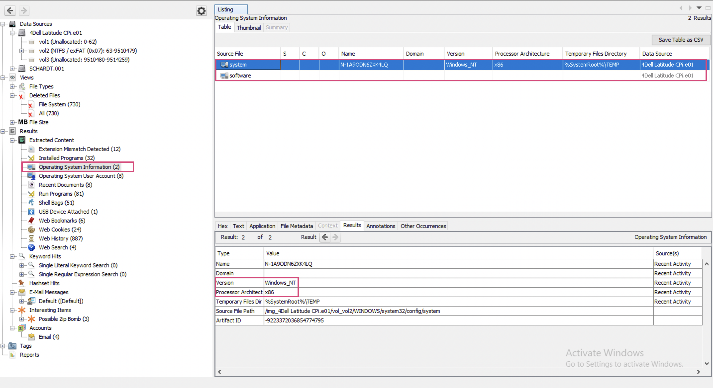
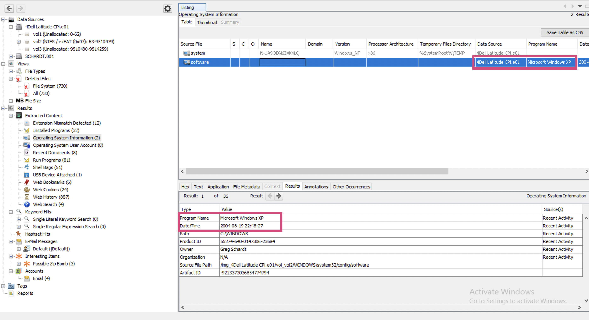
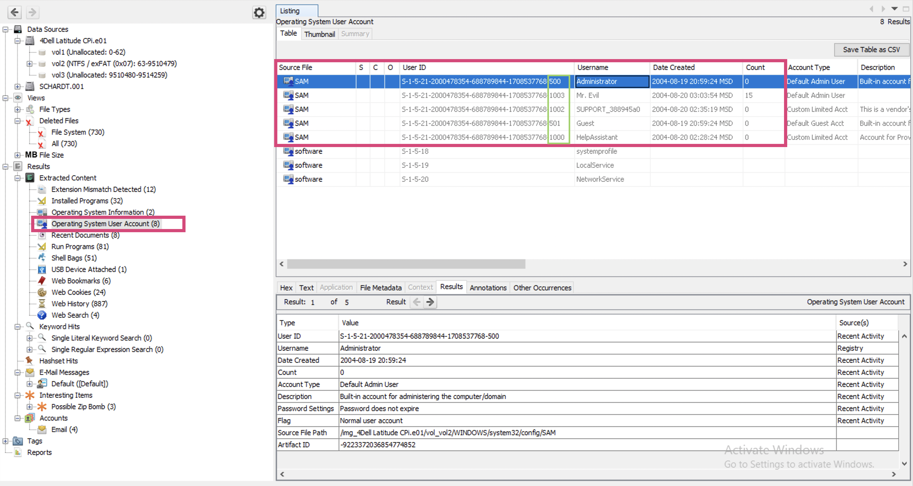
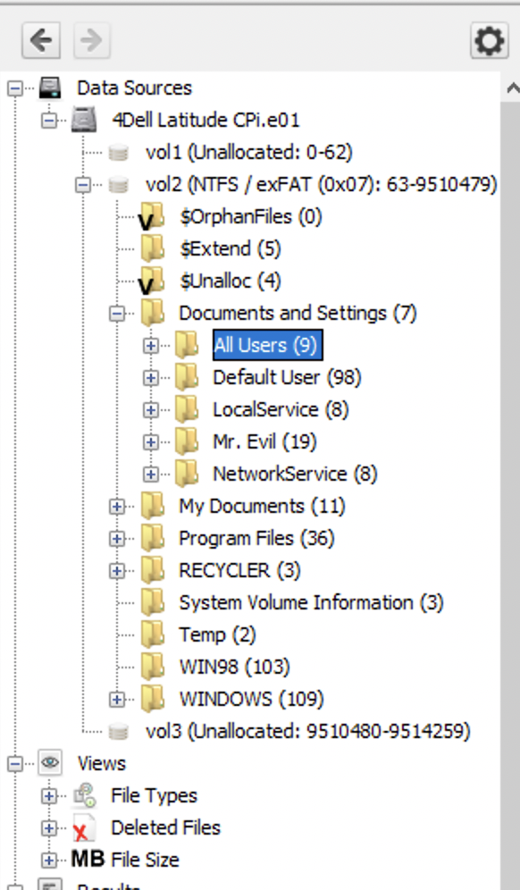
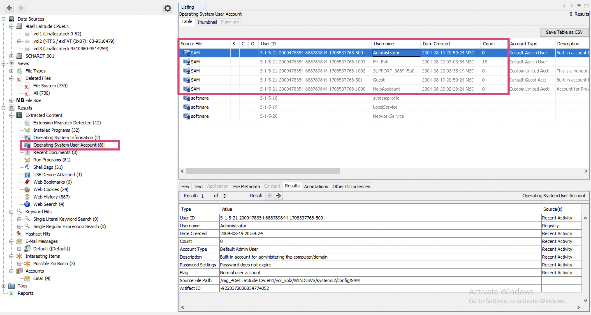
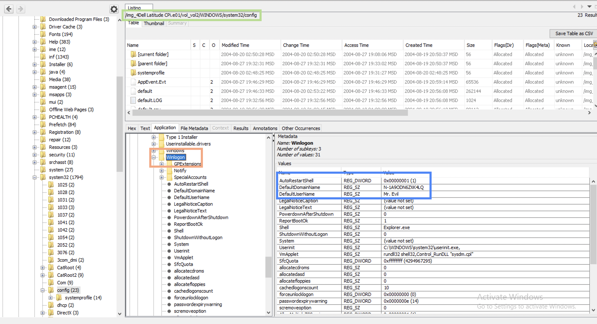
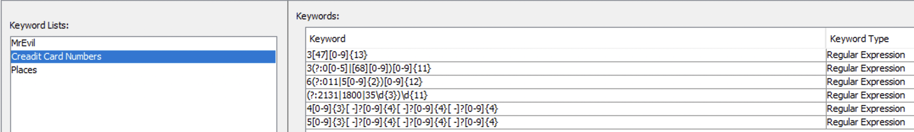
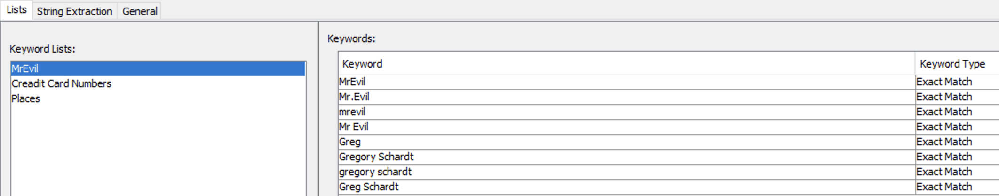
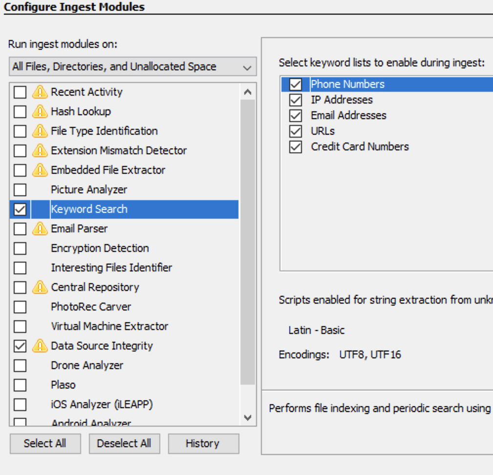

I’ve decided to solve a puzzle per week just to keep myself “forensically fit”. This is my case study of Dr.Evil case (spoiler alert ⚠️). If you wish to solve it yourself, don’t read this blog post!
Case Objectives
On 09/20/04 , a Dell CPi notebook computer, serial # VLQLW, was found abandoned along with a wireless PCMCIA card and an external homemade 802.11b antennae. It is suspected that this computer was used for hacking purposes, although cannot be tied to a hacking suspect, G=r=e=g S=c=h=a=r=d=t. (The equal signs are just to prevent web crawlers from indexing this name; there are no equal signs in the image files.) Schardt also goes by the online nickname of “Mr. Evil” and some of his associates have said that he would park his vehicle within range of Wireless Access Points (like Starbucks and other T-Mobile Hotspots) where he would then intercept internet traffic, attempting to get credit card numbers, usernames & passwords.
Find any hacking software, evidence of their use, and any data that might have been generated. Attempt to tie the computer to the suspect, G=r=e=g S=c=h=a=r=d=t.
A DD image (in seven parts: 1, 2, 3, 4, 5, 6, 7, 8, and notes) and a [EnCase image](https://www.cfreds.nist.gov/images/4Dell Latitude CPi.E01) ([second part](https://www.cfreds.nist.gov/images/4Dell Latitude CPi.E02)) of the abandoned computer have already been made.
Questions and Answers
What is the image hash? Does the acquisition and verification hash match?
📆 01/03/2021
⏰ 21:41
Have spent quite a time to install Autopsy on MacOS and after loading the second image keep getting crashes 😩. Looks like I will have to install Windows VM…
⏰ 22:44
Had to write another blog post to get everything ready for this one… . Oh these “stacked function calls” in real life …. In order to get something done, do something else, which requires this and that to run and this and that is installed with dozens of bugs etc 🤢. But I’ve finally managed to get it work (I mean Autopsy). Though didn’t have enough time to test whether it crashed or not upon adding a resource. Well, that will be left for the next time. I’m literally turning off.
📆 03/03/2021
⏰ 08:49
I’ve loaded the first disk image yesterday, but it’s still not done analysing it… . Well, to be honest, I turned it off for the night, but still. It’s still 55% only. Let’s wait. Ok. it’s just started working much faster than yesterday. Time to rewatch Autopsy course… .
⏰ 08:55
A very important note for people like me 🤦♀️ . When you see a series of files with extensions looking like this, for example: e01, e02, e03 or 001, 002, 003 etc, even though there are no e02, e03 or 002, 003 in the real life, these numbers at the end indicate that these files are parts of the same image. To load it into Autopsy, just choose the first one (those ending with 1, for example, e01 or 001). It took me a while to get this. See the link.
So, the first task is to check data source integrity. For E01 files the hash is usually calculated upon acquisition, and Autopsy verifies it if you run a Data Source Integrity digest module against this image. In case the acquisition and the calculated hashes do not match, I will see and error under Results -> Extracted Content -> Verification Failure. In my case, there were no errors hence for the E01 image the acquisition and verification hash do match.
Now to the second one. Along with the images I had a log file for 001 image where md5 hashes were calculated for each fragment during acquisition. I’ve run md5 SCHA* command line against these files to calculate all md5 hashes for these images and got the results:
MD5 (SCHARDT.001) = 28a9b613d6eefe8a0515ef0a675bdebd
MD5 (SCHARDT.002) = c7227e7eea82d218663257397679a7c4
MD5 (SCHARDT.003) = ebba35acd7b8aa85a5a7c13f3dd733d2
MD5 (SCHARDT.004) = 669b6636dcb4783fd5509c4710856c59
MD5 (SCHARDT.005) = c46e5760e3821522ee81e675422025bb
MD5 (SCHARDT.006) = 99511901da2dea772005b5d0d764e750
MD5 (SCHARDT.007) = 99511901da2dea772005b5d0d764e750
MD5 (SCHARDT.008) = 8194a79a5356df79883ae2dc7415929f
And these are the values from the aquisition log:
* SCHARDT.001 28A9B613 D6EEFE8A 0515EF0A 675BDEBD...
* SCHARDT.002 C7227E7E EA82D218 66325739 7679A7C4...
* SCHARDT.003 EBBA35AC D7B8AA85 A5A7C13F 3DD733D2...
* SCHARDT.004 669B6636 DCB4783F D5509C47 10856C59...
* SCHARDT.005 C46E5760 E3821522 EE81E675 422025BB...
* SCHARDT.006 99511901 DA2DEA77 2005B5D0 D764E750
* SCHARDT.007 99511901 DA2DEA77 2005B5D0 D764E750
* SCHARDT.008 8194A79A 5356DF79 883AE2DC 7415929F
These match too.
Also, both data sources have the same general hash (for all fragments) - aee4fcd9301c03b3b054623ca261959a indicating that these images are the same image in two different formats.
🗒 One thing that I’ve noticed is that SCHARDT.006 and SCHARDT.007 are identical. Mistake? Collision?
What operating system was used on the computer?
⏰ 09:00
I think I need some coffee break… and breakfast is due as well ☕ 🥐.
⏰ 09:30
I’m back here to carry on my investigation. The data source has Windows and Win98 folders and the folder hierachy also indicates that this OS is Windows. 4Dell Latitude CPi.e01 -> Listing -> Summary -> Aquisition details -> Acquiry Operating System: Windows XP.
❓ But it’s not clear whether this is the OS used to make the image or the OS of the disk itself.
Under Results -> Extracted Content -> Operating System Information there is system entry and there (when I click on it), I get more data (File Metadata and Results are one of them):

This information appeared only after running Recent Activity Ingest Module (or at least I’ve noticed it only then). It indicates Windows_NT. There also is some software entry. I’m going to click on it and see its metadata…
⏰ 09:05
Well, this one also shows the exact OS - Windows XP (how old is this challenge? 😮). This entry appeared only after running Recent Activity Ingest Module (as is seen on the rightmost bottom corner):

When was the install date?
The install date is already known from the previous screenshot (Results -> Extracted Content -> Operation System Information -> Date/Time) and if you believe the Autopsy’s analysis is 2004-08-19 22:48:27.
🗒 How to extract this information manually? Where is it found in Windows GUI and in registry or other system files?
What is the timezone settings?
⏰ 20:20
Back to our rams 🐏.
The answer is - Moscow Summer Time (MSD). This is shown right by the time and date.
Who is the registered owner?
The registered owner is Greg Schardt. Found right below install date.
What is the computer account name?
What’s an account name? May be, username? I see several users. Users have ids, and the last digits help to determine what this account is for. Administrator (500) and Guest (501) are default users. Those user accounts added then are given numbers starting from 1000 at the end and I see 3 users that follow this pattern: HelpAssistant, SUPPORT_blahblah and Mr. Evil.

My guts tell me that the correct answer is Mr.Evil, but I cannot prove it since there are other users listed in SAM as well. And they were created earlier (judging from their IDs).
📆 04/03/2021
⏰ 09:54
Let’s go to the Users folder and check whether there are other users there as well.

May be it’s this value that they mean: N-1A9ODN6ZXK4LQ … . One of the walkthrough articles stated that this is it. But I don’t think it is… . Oh, how hard it is to start… .

What is the primary domain name?
⏰ 20:43
I have no idea where to look for this. I have not found this thing in the previous locations. I’ve found this resource where the author looks in system registry hive for this information.

I do believe that N-1A9ODN6ZXK4LQ is a domain name since Winlogon states that (screenshot above). I don’t know if your trust in Winlogon should be ultimate but I also don’t see the point for it to lie 🤷♀️.
❓ What are other place to search for this information?
❓ Can this information be tampered with? If it can be, what are the possible reasons for doing so?
Keyword lists
⏰ 10:00
A little off the topic. While trying to answer these questions I am also rewatching Autopsy course to recall how to use the tool. Among other interesting things, I’ve decided to use Interesting Items Ingest Module. In the case description it says that the attacker is after credit cards 💳. Since I am likely to find them on the system, I am going to create a list of regex-es for credit card numbers from this link and run the Ingest module again.
I open Tools -> Options -> Keyword Search tab and create a New List. On the right part of the window I press New Keywords, check Regular expression and paste the regex-es from the link. That’s what my keyword list looked like in the end:

I know that regex is slow, but the disk image is not that big and I am in no hurry.
I also know, that that the owners name is G=r=e=g S=c=h=a=r=d=t (the primary suspect) and that his nickname is Mr.Evil. He is also probably used Starbucks for WiFi sucking. So, I am going to create another Keyword list with this data as well. That’s what my keyword list looked like in the end (Exact much instead of Regex this time):

⏰ 10:05
Let’s not run these keyword lists against my image and see the results. That will give some points to start from. I select my data source Dell Latitude CPi.e01, right click, Run ingest modules, deselect all and select Keyword Search only. I check all lists available including my own newly created and press Finish:

This is going to take a while so I will pause here and get back in the evening after dinner 🥘 (if I don’t feel like a squeezed lemon 🍋). I hopefully won’t… .
When was the last recorded computer shutdown date/time?
How many accounts are recorded (total number)?
I see several users. Users have ids, and the last digits help to determine what this account is for. Administrator (500) and Guest (501) are default users. Those user accounts added then are given numbers starting from 1000 at the end and I see 3 users that follow this pattern: HelpAssistant, SUPPORT_blahblah and Mr. Evil.
What is the account name of the user who mostly uses the computer?
Mr. Evil
Who was the last user to logon to the computer?
Since only Mr. Evil is used, I presume it was Mr. Evil.
A search for the name of “G=r=e=g S=c=h=a=r=d=t” reveals multiple hits. One of these proves that G=r=e=g S=c=h=a=r=d=t is Mr. Evil and is also the administrator of this computer. What file is it? What software program does this file relate to?
List the network cards used by this computer
This same file reports the IP address and MAC address of the computer. What are they?
An internet search for vendor name/model of NIC cards by MAC address can be used to find out which network interface was used. In the above answer, the first 3 hex characters of the MAC address report the vendor of the card. Which NIC card was used during the installation and set-up for LOOK@LAN?
Find 6 installed programs that may be used for hacking.
Many tools can be used for hacking, even Word (social engineering, taking notes or some office expoiltation). But I presume, they mean something more specific to hacking like metasploit or alike. I wonder if fping is considered a hacking tool… . I might turn to VirusTotal because it marks some tools as hacking ones.
What is the SMTP email address for Mr. Evil?
What are the NNTP (news server) settings for Mr. Evil?
What two installed programs show this information?
List 5 newsgroups that Mr. Evil has subscribed to?
A popular IRC (Internet Relay Chat) program called MIRC was installed. What are the user settings that was shown when the user was online and in a chat channel?
This IRC program has the capability to log chat sessions. List 3 IRC channels that the user of this computer accessed.
Ethereal, a popular “sniffing” program that can be used to intercept wired and wireless internet packets was also found to be installed. When TCP packets are collected and re-assembled, the default save directory is that users \My Documents directory. What is the name of the file that contains the intercepted data?
Viewing the file in a text format reveals much information about who and what was intercepted. What type of wireless computer was the victim (person who had his internet surfing recorded) using?
What websites was the victim accessing?
Search for the main users web based email address. What is it?
Yahoo mail, a popular web based email service, saves copies of the email under what file name?
How many executable files are in the recycle bin?
Are these files really deleted?
How many files are actually reported to be deleted by the file system?
Perform a Anti-Virus check. Are there any viruses on the computer?
References
[1] Case source itself
[2] Autopsy Course
[3] Another walkthrough